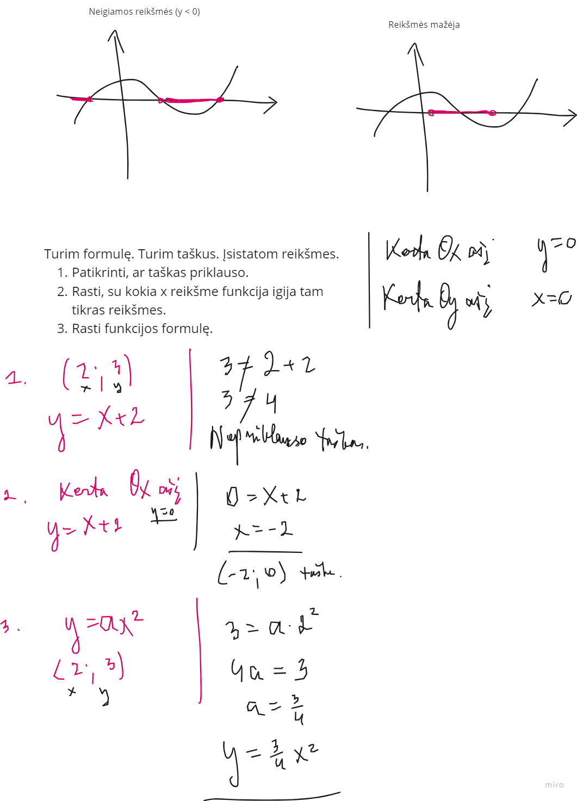
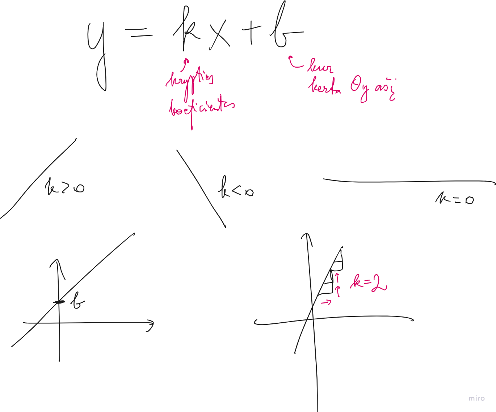
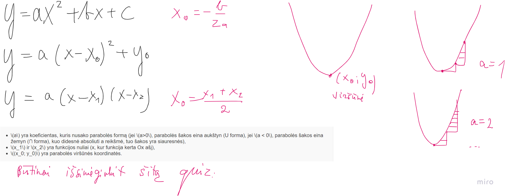
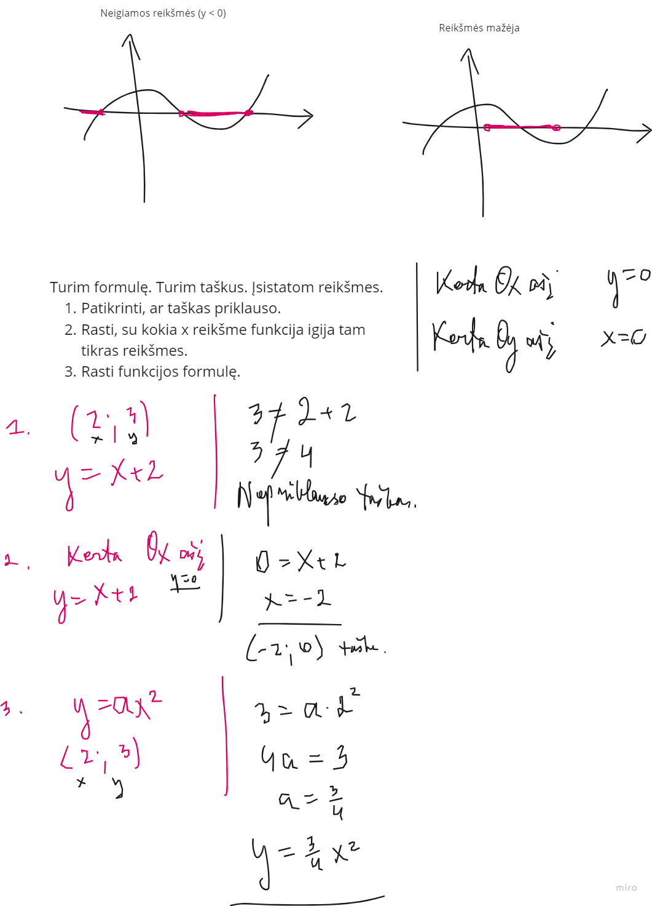
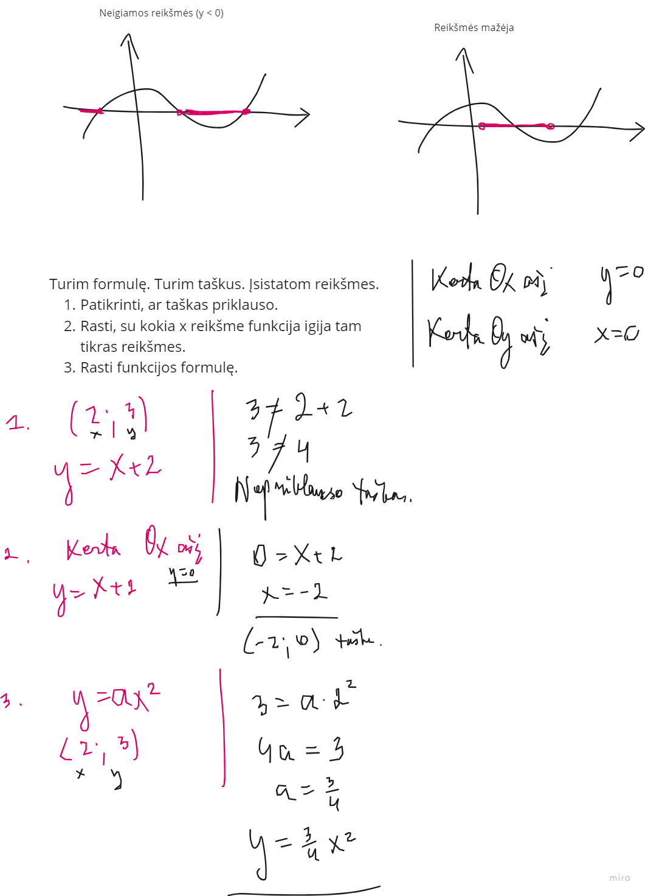

Į pradžią
Koordanačių uždaviniai
Paprasčiausiai nusipieškit. Koordinatėse pirmas skaičius yra x (abscisė), antras y (ordinatė).
Funkcijos bendrai

Tiesės

Parabolės

Parabolių formulių įsisavinimo testukas
 
